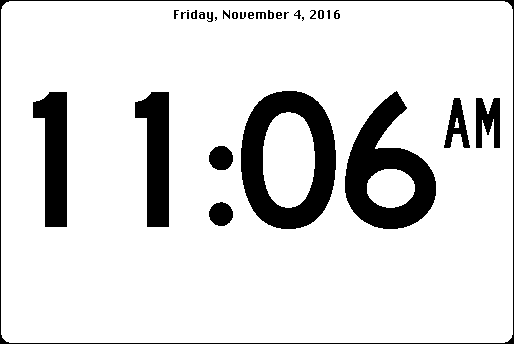

Download
HappyPlusClock_v0.86.zip (49K) HappyPlusClock v0.84 repackaged into a zipped hfs disk image and checksum file. The disk image can be mounted with Mini vMac.
HappyPlusClock_v0.86.sit.hqx (66K) HappyPlusClock v0.84 in the original format.
copyright: Aaron Hall
mod date: Aug 15, 2007
license: freeware
official url :
HappyPlusClock
A “clock program for Classic Macs with both analog and digital displays. It will run on any model back to the Macintosh Plus, and any version of the Classic Mac OS back to System 4.2.” Winner of Retro Challenge 2007.

If you find these downloads useful, please consider helping the Gryphel Project, which hosts them.
Here are the md5 checksums for the downloads, signed with Gryphel Key 5:
--------- GRY SIGNED TEXT --------- 72788791afcab951c3bf6bcb4639a8f2 HappyPlusClock_v0.86.zip 3280100de2e361bddf4d3a6e10970449 HappyPlusClock_v0.86.sit.hqx ------- BEGIN GRY SIGNATURE ------- Gry/4Xa8CFcUzxdN/BtNcbkL3tKQjjLDZDUz6/OGBP7mY7A37FlOO5DkeVvHTYmD lFxU6J0UiCt97LE6od5Q0OXZ2pRh0HoIm/gbTlgPL9xxEH8QqczE0sY9rcAk96G8 BpOl7wtVpAmvpEwC9hg6BcSIzyA3ijwu7Vk59e3dlfldKWj9mUlb2Y09P1WQQja+ -------- END GRY SIGNATURE --------